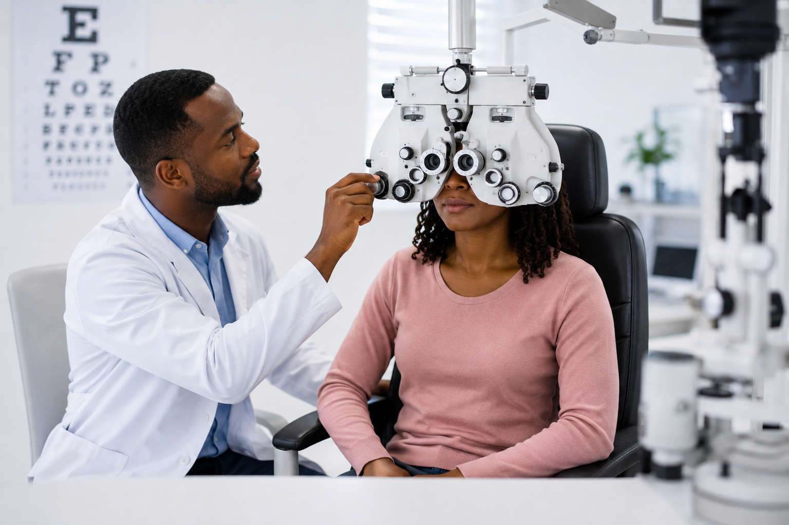
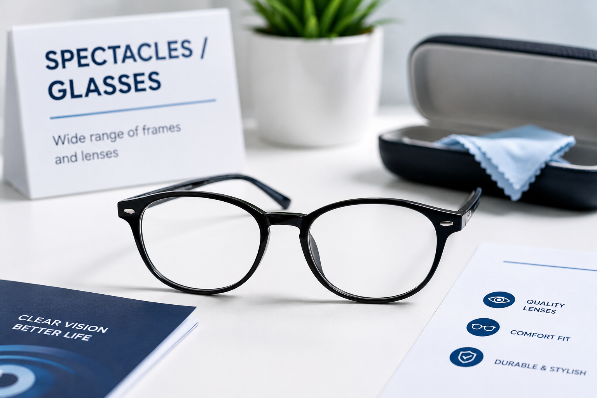
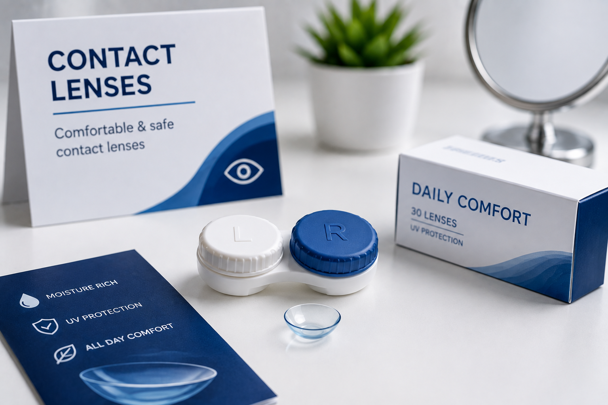

Comprehensive
Eye Exam
Complete eye check-up for all ages
›Hlungwani T.P Optometrist
Professional eye care services for you and your family. Clear vision, better life.

Complete eye check-up for all ages
›
Wide range of frames and lenses
›
Comfortable and safe contact lenses
›
Stylish and UV-protected sunglasses
›Official eye-test certificates
›Early detection supports healthier vision
›About the practice
Hlungwani T.P Optometrist offers practical, patient-focused eye care for individuals and families in Vuwani and surrounding communities. We aim to make every visit clear, comfortable and easy to understand.
What patients can expect
From your first question to your appointment request, the website and practice are designed to keep the next step simple.
Understand the service you are requesting and what to expect before you visit.
Eye-care services centred on your vision needs, comfort and the reason for your visit.
Call, email or WhatsApp the practice when you need help, directions or appointment support.
Visit or contact us
Hlungwani T.P Optometrist serves patients in Vuwani, Limpopo. Contact the practice before travelling if you want to confirm availability or current opening hours.
Open Vuwani in Google Maps for directions, or contact the practice if you need help finding us.
Open in Google MapsQuick answers
A few useful things to know before sending your appointment request.
Yes. Complete the appointment request form, choose your preferred service, date and time, and continue on WhatsApp so the practice can confirm availability.
No. The website sends an appointment request. The practice will confirm the available date and time with you.
You can choose “Not sure - please advise” on the appointment form or contact the practice and explain what you need help with.
If relevant, bring any spectacles or contact lenses you currently use and mention any changes in your vision or symptoms when booking.
Request an appointment or speak to the practice directly.